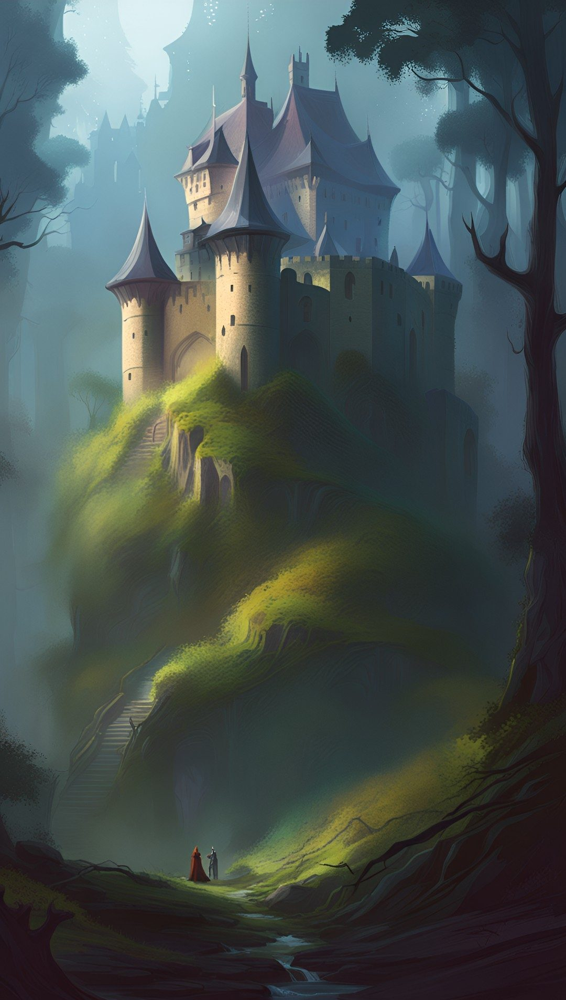
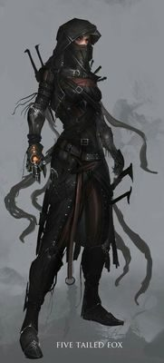
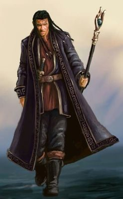
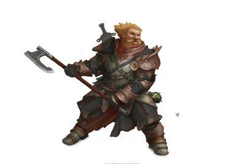
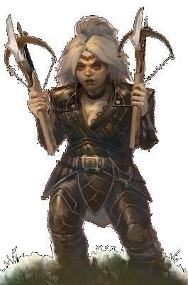
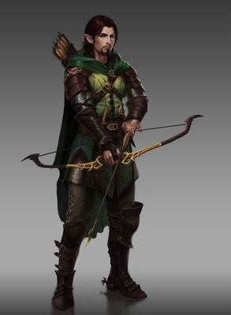
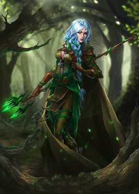

Amar Lite is the simplified version of the Amar Role-Playing Game. It is reduced to its simplest form to get absolute beginners a taste for role-playing games. Use it as an introduction or keep using it if you want to have the simplest or rules for your campaign. Any dice roll involved is done simply with a normal 6-sided dice. Here is the podcast introducing the Amar Lite RPG.
The character
A character is described by a set of characteristics:
| Characteristic | Description |
|---|---|
| STRENGTH | The physical strength of a character. This determines how much the character can carry and how big a weapon he or she can use. |
| BODY POINTS | The amount of damage a character can take. |
| AWARENESS | The character's alertness. |
| MAGICAL APTITUDE | How many magic spells a character can cast. |
| SPELL CASTING | The skill of casting magic spells. |
| SNEAKING | The ability to sneak around without being noticed. |
| SLEIGHT | The ability to pick pockets and locks. |
| CLIMBING | The character's skill in climbing |
| SWIMMING | The skill of swimming. |
| MELEE SKILL | Ability to fight in close combat. |
| MISSILE SKILL | Ability to hit a target with a ranged weapon. |
The range for all of these are normally 0 to 8 for humans. BODY POINTS range from 4 to 10 for humans. A zero in any of them indicates an inability to perform any action related to that characteristic.
BODY POINTS and MAGICAL APTITUDE are characteristics that can be temporarily lowered. BODY POINTS are lowered when you take physical damage and MAGICAL APTITUDE when you cast magic spells. Both get recharged. BODY POINTS is recharged one per week of rest or by magic healing or potions. MAGICAL APTITUDE is fully recharged by one good night of sleep.
Encumbrance
A character can carry as much as his or her strength without incurring any penalties. A weapon, armor or any other equipment has a certain encumbrance (ENC). Subtract one on every roll for each point in encumbrance above the character's strength (except when rolling for damage inflicted). Example: If your character has 3 in strength and carries 5 in ENC, you must subtract 2 from every roll. If you have a bow and discard that during melee combat, it no longer counts as encumbrance.
Armor
Armor reduces the damage inflicted to a character. Each Armor Point (AP) subtracts one from any damage inflicted.
| Armor | AP | ENC |
|---|---|---|
| Shield | 1 | 1 |
| Leather | 1 | 1 |
| Ringed mail | 2 | 2 |
| Cuirboullie | 3 | 3 |
| Chain mail | 4 | 4 |
Shields can be used in addition to any other armor worn.
Weapons
Weapons does a certain amount of damage (DAM) when it hits.
| Weapon | DAM | ENC |
|---|---|---|
| Unarmed | -2 | 0 |
| Small weapon | 0 | 1 |
| Medium weapon | 2 | 2 |
| Large weapon | 4 | 3 |
Unarmed can obviously only be used in melee combat.
Small melee weapons are knife, hatchet, light mace, staff and short sword. Medium melee weapons are long sword, heavy mace, club, spear and flail. Heavy melee weapons are great sword, Hercules club, halberd and great axe.
Small missile weapons are throwing weapons (knife, hatchet, spear) or sling. They have a normal range of 15 meters. Medium missile weapons are bow and light crossbow and have a normal range of 30 meters. Large missile weapons are large bow and heavy crossbow with a normal range of 40 meters. Throwing weapons, sling and bows can fire once per combat round. Crossbows can fire every second round.
The game play
Whenever a character attempts to do something that has an uncertain outcome, a dice roll will determine if the action is successful. Every roll made is against a Difficulty Rating (DR). Roll a dice and add the characteristic used. If the total matches the DR, it is successful. Example: If your character attempts to climb a castle wall with a DR of 8 and the character has 4 in CLIMBING, you need to roll a 4 or better on the dice to succeed.
When you attempt an action against a foe, you roll a dice, add the characteristic used and that becomes the DR that your foe needs to match.
Example: You strike a foe with your weapon. You have 3 in MELEE SKILL and roll a 5. The total is 8 which is then the DR that your foe needs to match in order to block your attack. He has 4 in MELEE SKILL and needs to roll a 4 to make the total match your attack. The foe only rolls a 2 and is hit. You use a medium weapon and roll for damage (dice plus the weapon's damage of 2). You get a 3 on the dice and the total damage inflicted is 5. Subtract the foe's armor points of 2. You inflict a resulting 3 in damage to his BODY POINTS. When the BODY POINTS reaches zero, he passes out. When it reaches the negative of his normal BODY POINTS, he is dead.
Another example: You attempt to sneak up on an enemy. You roll a dice and add your SNEAK score for a total of 9. This becomes the enemy's DR when he rolls a dice and adds his AWARENESS. If he gets a total of 9 or more, you are busted. The same if you use SLEIGHT to pick the pockets of someone in a town. You roll a dice and add your SLEIGHT score. The someone rolls a dice and adds her AWARENESS. If her total is less than your total, you get the loot.
A combat round is 6 seconds. Each combatant rolls a dice and add his or her AWARENESS. The one with the highest total goes first, the second highest goes second and so on until every combatant has attacked. If a combatant reaches 0 or lower in BODY POINTS before it is his turn, well... he will not get a turn.
You can only attack once per combat round, but you defend as many times as you are attacked.
When firing a missile weapon, the DR is 5 to hit any target within half normal range, 10 up to normal range and 15 up to double normal range.
These are the DRs for CLIMBING. Roll for every 5 meters to climb. If you fail, you will fall from the hight you started that CLIMBING roll and take a dice roll in damage +1 per 2 meters you fall.
| Type | DR |
|---|---|
| Steep slope | 2 |
| A tree | 4 |
| Cliff | 6 |
| Castle wall | 8 |
| A rope or difficult castle wall | 10 |
These are the DRs for SWIMMING. Roll for every 50 meters to swim.
| Type | DR |
|---|---|
| Calm waters | 2 |
| Undercurrents | 4 |
| Strong undercurrents | 6 |
| Rapids | 8 |
| Strong rapids | 10 |
Magic
If a character can learn to cast a spell if he or she has at least one in SPELL CASTING and in MAGICAL APTITUDE. When casting a spell, you roll a dice and add your score in SPELL CASTING to match the DR for that spell. You can cast one spell per combat round (6 seconds).
| Spell | DR | Effect |
|---|---|---|
| Healing | 6 | Roll a dice to see how many BODY POINTS the target is instantly healed. |
| Fireball | 8 | Casts a ball of fire up to 10 meters from the spell caster. Roll a dice +1 for damage to all creatures within 3 meters of the blast. |
| Silence | 6 | Makes a target completely silent for 1 minute. |
| Invisibility | 10 | Makes a target invisible for 1 minute. |
| Lightning bolt | 6 | Casts a bolt of lightning up to 10 meters. Roll a dice +2 for damage to the target. |
| Water breathing | 8 | Lets the target breath in water for 1 minute |
| Freeze | 6 | Gives the target -2 to all rolls for 1 minute. The target rolls a dice and add its MAGICAL APTITUDE for a total of 8 to cancel the effect. |
| Magic Armor | 6 | Gives the target an additional 2 in armor for 1 minute. |
Experience and training
When you have 10 successful rolls using a characteristic, you gain one in that characteristic. If you spend one month training in a characteristic it will also increase by one. You cannot increase your BODY POINTS except through rare magic.
Starting characters
The above is the complete rules set for Amar Lite. Now, to help getting into the game, here are a few starting characters you can use.

Name: Aleena Race: Human Description: Female thief
STRENGTH: 3 ENCUMBRANCE: 3 BODY POINTS: 6 AP: 1 (Leather)
AWARENESS: 3 SNEAKING: 6 SLEIGHT: 5
CLIMBING: 5 SWIMMING: 5
MELEE SKILL: 4 Weapon: Knives (Dam 0)
MISSILE SKILL: 4 Weapon: Knives (Dam 0)
MAGICAL APTITUDE: 0 SPELL CASTING: 0
SPELLS: None


Name: Endragoel Race: Human Description: Male wizard
STRENGTH: 2 ENCUMBRANCE: 1 BODY POINTS: 6 AP: 0 (none)
AWARENESS: 1 SNEAKING: 1 SLEIGHT: 1
CLIMBING: 1 SWIMMING: 1
MELEE SKILL: 3 Weapon: Staff (Dam 0)
MISSILE SKILL: 1 Weapon: None
MAGICAL APTITUDE: 5 SPELL CASTING: 5
SPELLS: Freeze, Magic Armor, Fireball, Water Breathing


Name: Barghan Race: Dwarf Description: Male warrior
STRENGTH: 6 ENCUMBRANCE: 6 BODY POINTS: 8 AP: 3 (Cuirboullie)
AWARENESS: 1 SNEAKING: 1 SLEIGHT: 1
CLIMBING: 0 SWIMMING: 0
MELEE SKILL: 5 Weapon: Great axe (Dam 4)
MISSILE SKILL: 2 Weapon: Heavy crossbow (Dam 4)
MAGICAL APTITUDE: 0 SPELL CASTING: 0
SPELLS: None


Name: Sivirda Race: Dwarf Description: Female guard
STRENGTH: 5 ENCUMBRANCE: 5 BODY POINTS: 7 AP: 2 (Ringed mail)
AWARENESS: 1 SNEAKING: 2 SLEIGHT: 1
CLIMBING: 1 SWIMMING: 0
MELEE SKILL: 3 Weapon: Staff (Dam 0)
MISSILE SKILL: 6 Weapon: Heavy Crossbow (Dam 4)
MAGICAL APTITUDE: 0 SPELL CASTING: 0
SPELLS: None


Name: Tharian Race: Half-elf Description: Male hunter
STRENGTH: 2 ENCUMBRANCE: 2 BODY POINTS: 5 AP: 1 (Leather)
AWARENESS: 5 SNEAKING: 5 SLEIGHT: 1
CLIMBING: 3 SWIMMING: 2
MELEE SKILL: 3 Weapon: Staff (Dam 0)
MISSILE SKILL: 5 Weapon: Bow (Dam 2)
MAGICAL APTITUDE: 0 SPELL CASTING: 0
SPELLS: None


Name: Alathriel Race: Half-elf Description: Female wizard
STRENGTH: 1 ENCUMBRANCE: 1 BODY POINTS: 4 AP: 0 (none)
AWARENESS: 3 SNEAKING: 2 SLEIGHT: 1
CLIMBING: 1 SWIMMING: 0
MELEE SKILL: 2 Weapon: Staff (Dam 0)
MISSILE SKILL: 1 Weapon: None
MAGICAL APTITUDE: 6 SPELL CASTING: 5
SPELLS: Silence, Invisibility, Lightning bolt, Healing
The first Amar Lite adventure
Now you should have a few players gathered, each with a character to play. It is time to kick off the game with the first quest: The first Amar Lite adventure
An even simpler system: Amar Lite Lite
The simplest I can come up with would be this:
Each character has 4 SKILLS: Thievery, Melee, Missile and Magic. You start with 2 in Thievery, Melee and Missile and 0 in Magic and add 4 to one of them. You can only play a human. All characters have 7 Body Points. Damage done is a six sided dice - both for melee and missile hits. This is the extent of your starting character.
Combat is resolved by each player rolling for attack and defense, your melee skill plus a dice versus your opponent's melee skill plus a dice. If you score higher on your attack than your opponent's total defense, you score a hit, doing one dice in damage. Then your opponent rolls for attack and you for defense. The attacks happen simultaneously. For missile weapons, you roll just as described for Amar Lite above.
Any other skills like climb, track, tumble, swim, ride, sneak, etc. are based on your Thievery skill. You roll a dice and add your Thievery to get a total score. Use the tables for Amar Lite for Difficulty Ratings.
Magic is resolved as in Amar Lite. You can cast as many spells per day as your Magic skill.
The GM decides when a character increases in any of the four skills.
This makes for an Role-Playing Game system usable for kids down to 4 or adults up to 104.